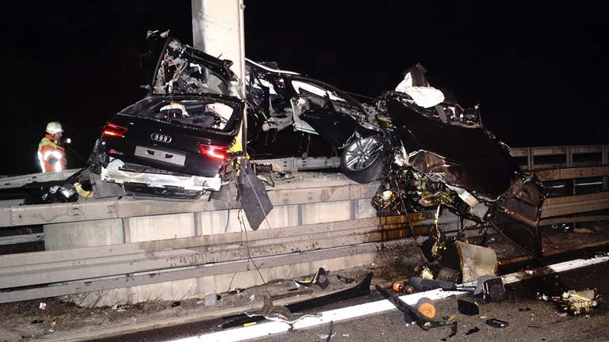

Acidente do Audi RS6 na Autobahn: O Impacto, a História e os Mitos por Trás do Caso
Alemão da Caravan
Publicada em: 07/06/2025
Acidente do Audi RS6 na Autobahn: O Impacto, a História e os Mitos por Trás do Caso
O Acidente e Suas Consequências
Segundo relatos oficiais, o motorista trafegava em alta velocidade durante a noite quando não percebeu a manobra do caminhão que trocava de faixa. O Audi RS6 atingiu a traseira do veículo pesado e, em seguida, foi lançado contra um pilar, destruindo completamente a perua. O condutor foi arremessado para fora do carro e morreu no local. O motorista do caminhão não sofreu ferimentos.
A rodovia A81 foi fechada nos dois sentidos para atendimento e remoção dos destroços. O acidente é considerado pela comunidade automotiva como um dos mais graves envolvendo um esportivo de produção em série

Quem Era o Motorista?
Informações sobre o condutor, identificado em algumas fontes como Samuel, um empresário de 68 anos, são escassas devido às leis de privacidade na Alemanha. O que se sabe é que ele era obcecado por velocidade e que o acidente ocorreu enquanto ele dirigia em direção a Stuttgart, a mais de 300 km/h em um trecho da Autobahn sem limite de velocidade.